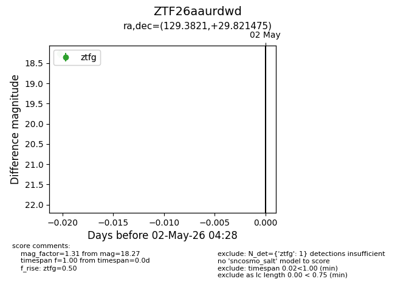
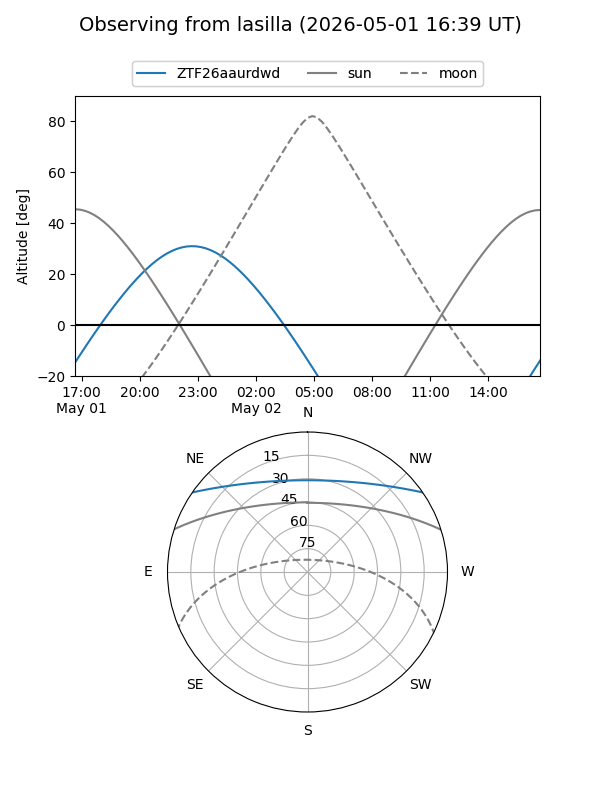
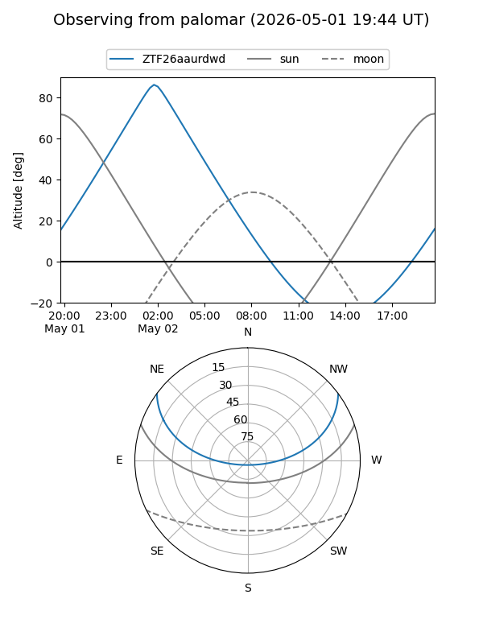

ZTF26aaurdwd
Target ZTF26aaurdwd at 2026-05-02 04:38
Aliases and brokers:
FINK: link
Lasair: link
ALeRCE: link
alt names
ZTF26aaurdwd (ztf,fink_ztf)
Coordinates:
equatorial (ra, dec) = 129.3821,+29.82147
equatorial (HMS+DMS) = 08:37:31.70,+29:49:17.31
galactic (l, b) = (194.0216,+34.85893)
Flags:
Photometry:
last ztfg=18.27
1 ztfg detections
Lightcurve

Visibility


Additional plots